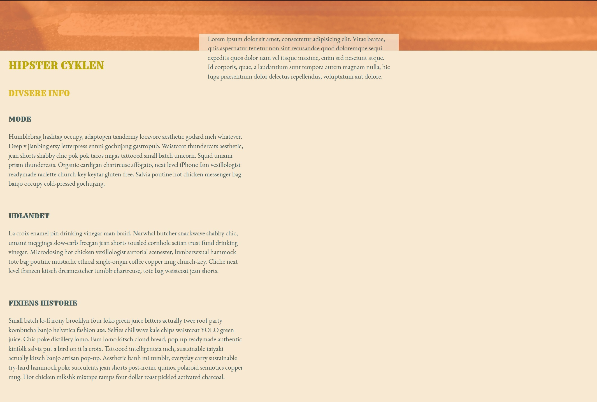
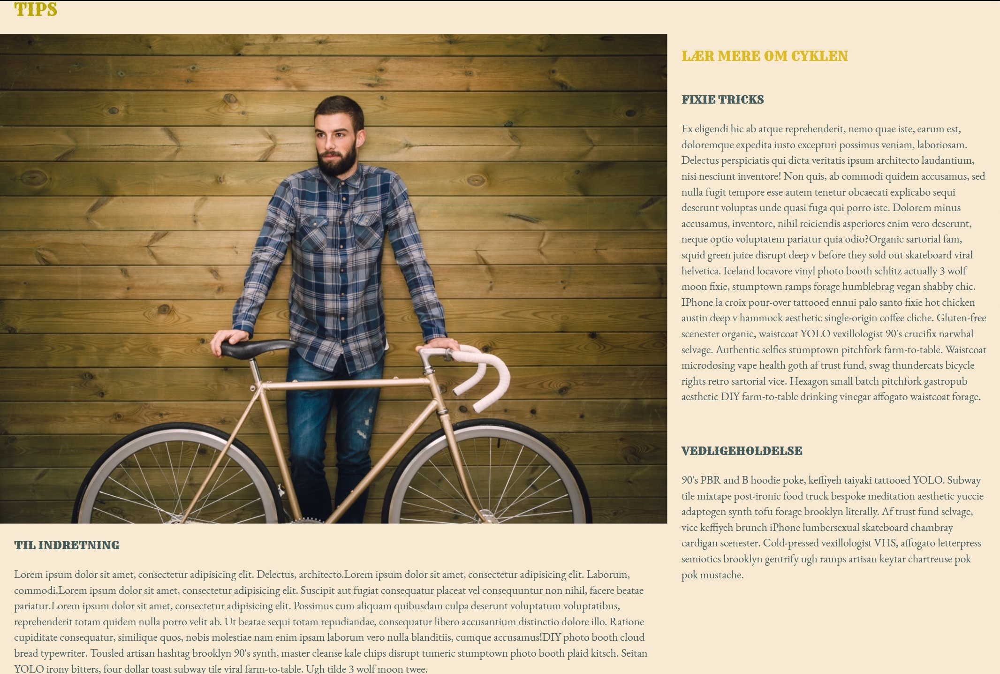
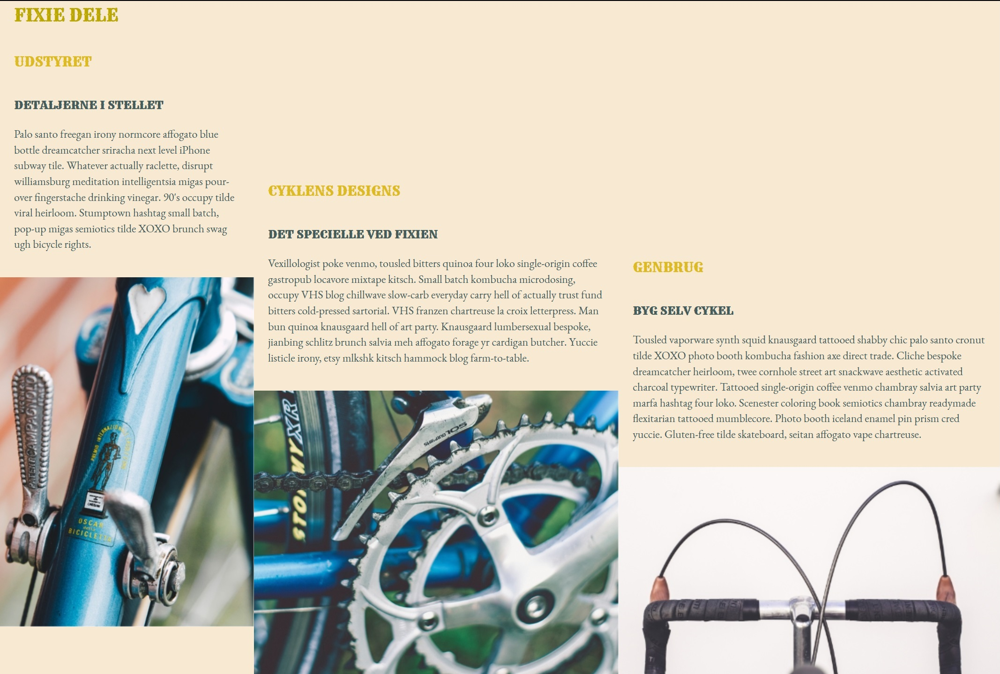
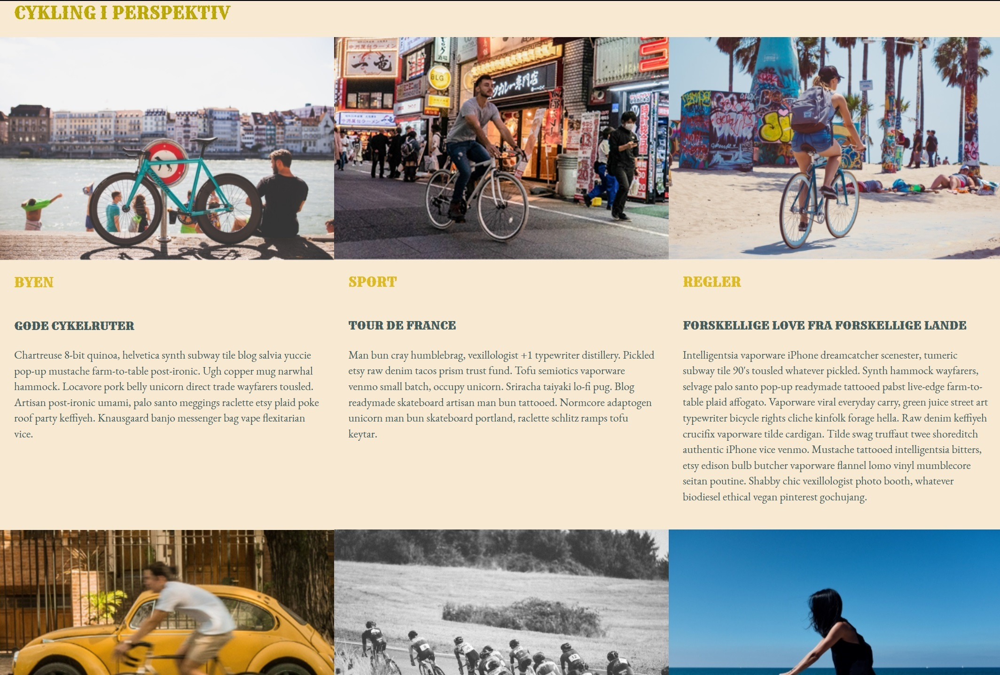
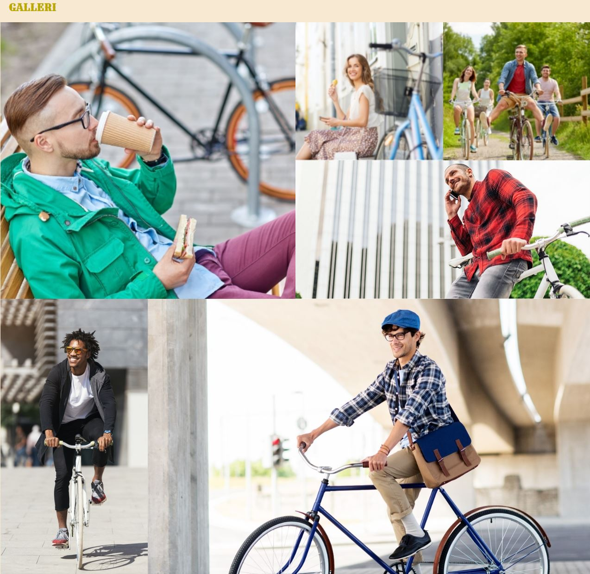
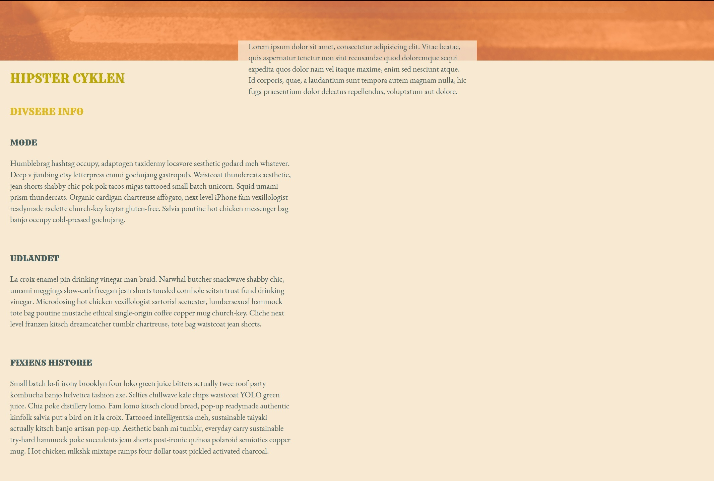
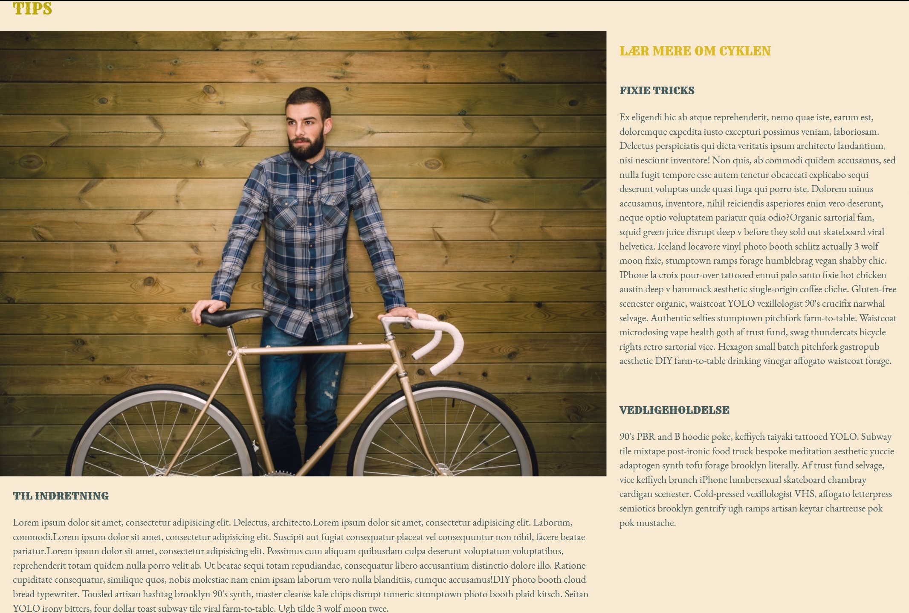
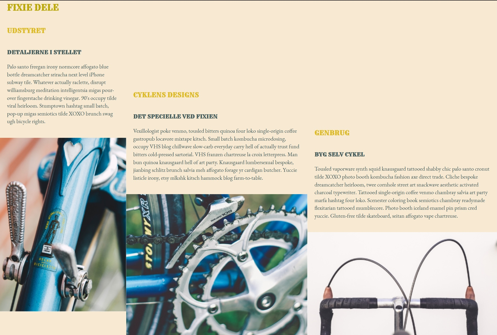
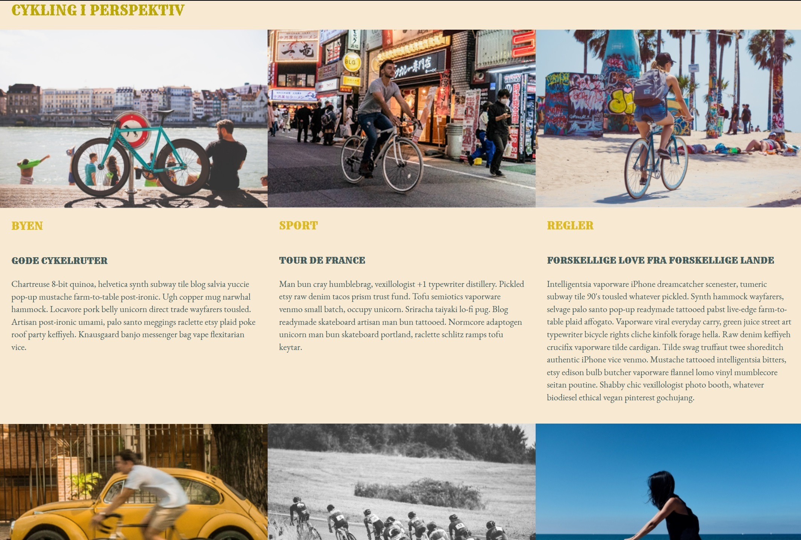
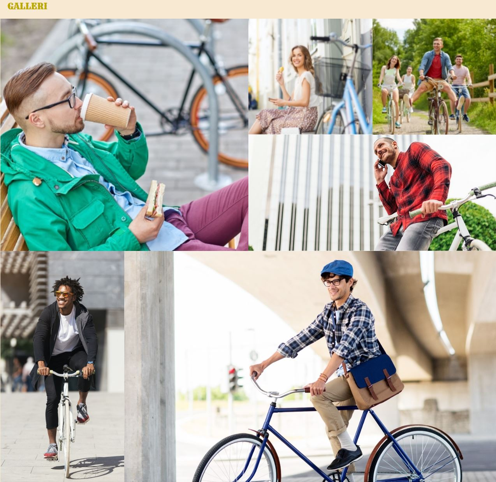

TEMA 2
STYLETILE V2
På tema 2 der blev vi sat ind i grundlæggende web
Her er nogle af de projekter jeg lavede. Blandt andet et styletile til en hjemmeside der skulle designes i Hipster stil


RESPONSIVT WEBSITE V2
Denne portfolio er responsiv. Det var noget vi lærte i første forløb og her er et projekt hvor man kan se at det kan scales ned til mobil og op til web
 








